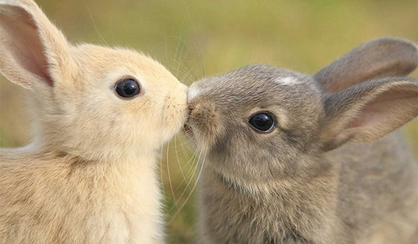
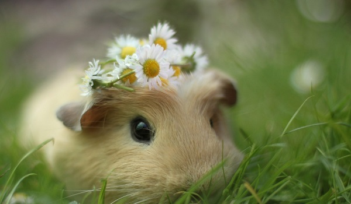

Sve za vaše kućne ljubimce na jednom mestu


Novosti iz veterine koje ste možda znali
 |
 |
Kućni ljubimci - čuvari vaše porodiceŠta sve treba da znate o vasem ljubimcu: Ljubimci ublažavaju alergije i jačaju imunu funkciju – pogrešno se smatra da prisustvo psa može izazvati alergije,jer su naučnici utvrdili upravo suprotno. Naime, ustanovljeno je da život sa ljubimcem, tokom prve godine života,umanjuje potencijalne alergije na životinje. Pored toga, jača se imuni sistem deteta i ... Čitaj dalje ... |
Buve - dosadne napasti vaših ljubimacaŠta sve niste znali o buvama: Ženka buve može položiti i do 20 jaja dnevno. Polovina položenih jaja biće ženskog roda, što dovodi do računice da će u roku od otprilike 60 dana, broj buva dostići neverovatnih 20.000 novih jedinki.Prosečna buva bi svojim sposobnostima mogla da postidi svakog Olimpijca. Naime, one mogu skočiti i 110 puta ... Čitaj dalje ... |
|  |  |
Krpelji - potencijalno velika opasnost vašim ljubimcimaŠta sve niste znali o krpeljima: Krpelji ne lete, ne skaču i ne padaju sa drveća, već do svojih žrtava dolaze puzeći.Karakteristika mnogih vrsta krpelja je da je njihova pljuvačka poput cementa. Naime, oni na taj način uspevaju da se učvrste na koži domaćina, zbog čega se teško uklanjaju.Ujed krpelja "Lone Star" može izazvati retku alergiju ... Čitaj dalje ... |
Ko smo mi i šta radimo ?Mi smo obična grupa gradjana, koja svojim slobodnim vremenom pokusavamo da edukujemo svakog pojedinca u cilju boljeg ophodjenja prema našim ljubimcima.U današnje vreme brzog življenja ,ponekad zaboravljamo na svoje ljubimce. Ne zaboravimo da su i oni ziva bića i setite se sa kojim žarom i srećom ste se prvi put sreli sa njima. Nastojimo da održavamo taj odnos.Nekad malo pažnje mnogo znači,šaka granula,nežan dodir,pogled ili zagrljaj... Čitaj dalje ... |
Da li ste znali da je terapijsko jahanje, upotreba konja i aktivnosti orijentisanih prema konjima u svrhu postizanja različitih terapijskih ciljeva: kognitivnih, fizičkih, emocionalnih, socijalnih, edukacijskih i bihevioralnih. Koristi od terapijskog jahanja mogu imati osobe svih starosnih doba, s različitim oblicima fizičkih, mentalnih ili emocionalnih smetnji. Nije tačno poznato kad je terapijsko jahanje postalo posebna disciplina. Još su se u staroj Grčkoj konji koristili u svrhu poboljsanja zdravlja i kvaliteta života. Da li ste nekada osetili stanje opustenosti u blizini konja, slično onome koje doživljavamo pri blizini velike vode: reke, jezera, mora... Danas je jahanje sve popularnije u Srbiji. Svi Vi koji imate neosnovani strah prema konjima, probajte da im se približite, pomazite, ostvarite kontakt očima, dodirom... Ne morate ih jahati...osetićete novo iskustvo, možda i pravo prijateljstvo ... Potražite konjički klub, konjušnicu ... isplatiće Vam se...